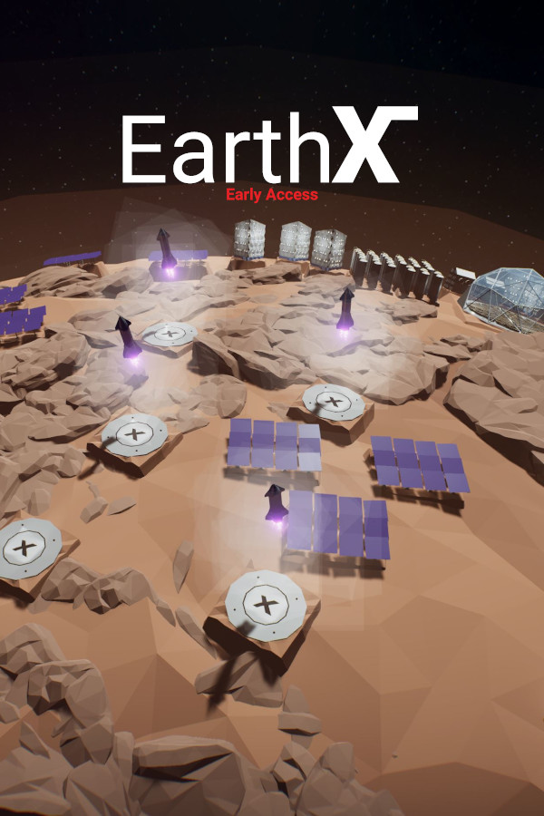

EarthX
EarthX
Details
|  | |
| Playtime | Not Played |
| Last Activity | Never |
| Added | 6/3/2022 4:21:36 |
| Modified | 6/17/2022 19:05:22 |
| Completion Status | Not Played |
| Library | Steam |
| Source | Steam |
| Platform | Steam |
| Release Date | 7/12/2019 |
| Community Score | 85 |
| Critic Score | |
| User Score | |
| Genre | Early Access Indie Simulation Strategy |
| Developer | Denis Ry |
| Publisher | Mesote Games |
| Feature | Achievements Cloud Saves Single Player |
| Links | Community Hub Discussions Guides News Store Page PCGamingWiki Achievements |
| Tag | |
Description

EarthX is a game that focuses mainly on managing your own private space company. You will have to develop better and better rockets, fight for contracts with competitors, and develop your company to the highest levels. This space company simulator, which has been under development for over a year, has a nice graphic design and a pleasant soundtrack by xandra.

Although EarthX is not yet fully completed, it already has quite a lot of content.
Here are some of them:
- Launch and land your rockets to use them again on your next mission - elements of economic strategy!
- Grow your business through vehicles, where each of them unlocks new features in the game!
- Possibility to create your own constellation of satellites for the global Internet.
- Build rockets, capsules, and spaceships!
- Build a colony on Mars!
- Terraform Mars!
- Compete against the competition for contracts!
- Send crew and supply missions to the International Space Station!
- Did I mention catching the fairings?
Of course, there's a lot more, but what would be the fun of it if we wrote everything here?

There is still one update to be released, the Moon Update. I will release it after the summer since now I have exams and I need to focus on them first.
Here's what we plan to add before leaving early access:
- Allowing players to build their own Moonbase and flyby around the Moon (#dearmoon).
Of course, there are many more plans, but these are the most important ones. Can we do it all? Well, we don't know that. What we do know is that since July 2019 we have released a lot of updates and each of them added "this thing" to the game. So.. answer the question yourself: Can you trust us?

Our team consists of 2 main developers and 4 team members who help with the game in different fields. The whole thing wouldn't have been possible if it wasn't for our community on the Discord server, which is still throwing ideas for new features and catching all kinds of bugs!
Denis Szwarc (19)
He’s our main, recently adult programmer who started the project when he was 16 and, despite harder moments during its development, he managed to do it and the game is still here. He is fascinated by new technology (especially SpaceX and Tesla) and will do his best to make the game reflect that.
Ry Kellan (19)
In August 2019 she asked on our Discord if she could translate EarthX into the Russian language. For several months now, she has been creating models for the game, which certainly makes the game richer with a bit of realism. Just like Denis, she's a fanatic about space flying and there's probably nothing she doesn't know about!
-----
Adrian Wesołowski (33)
He joined us in May 2019, where at the beginning he was mainly involved in marketing management and quality control. Recently he started to write articles for the game, thanks to which it gained depth and atmosphere. Adrian has been writing for many years for his own website.
Karolina Dekajło (17)
She asked in 2019 if we need some voice to a tutorial. We didn't need her back then, but then we needed her in August 2020 to record some lines for the tutorial (0.3.2).
Lucas (N\A)
He helps rykllan make models, you will be able to see his amazing work in 0.3.3 and 0.9.0 updates. That should speed up the process. Also, we don't know his real name or age, because he didn't want to answer, but we know that he's [REDACTED] for sure.
Patrick Kurola (20)
He makes good music (we call it art) for EarthX trailers and sometimes in-game cutscenes/menu. He also actively creates music under his "SPATE" brand available on Soundcloud.